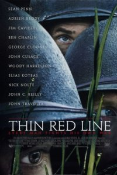

Операция «Фортуна»: Искусство побеждать
Операция «Фортуна»: Искусство побеждать Мой ужасный сосед
Мой ужасный сосед Черный ящик
Черный ящик Аферисты
Аферисты Крушение
Крушение Вавилон
Вавилон Чёрная Пантера: Ваканда навеки
Чёрная Пантера: Ваканда навеки



название
Тонкая красная линия
год
страна
время
2 часа 50 мин
просмотр
режиссер
в главных ролях
Про фильм
Военная драма «Тонкая красная линия» рассказывает историю сражения в тихоокеанском регионе между Японской империей и Союзниками за остров Гуадалканал во время Второй мировой войны. Сюжет фильма показывает несколько месяцев из жизни американских солдат, брошенных в мясорубку военный действий. Рота С была отправлена на подмогу морской пехоте, которая понесла большие потери, а выжившие вымотались постоянной борьбой с японцами.
Попав в гущу событий, солдаты уже не задаются вопросом за какие идеалы они воюют, а пытаются выжить всеми силами. У каждого героя фильма «Тонкая красная линия» свои принципы, кто-то пытается выиграть битву, чтобы получить повышение в звании, а кто-то просто хочет выжить и вернуться домой к семье. © ГидОнлайн
Смотреть онлайн
Расскажи друзьям
Название
В оригинале
Что еще посмотреть
 Книга джунглей
Книга джунглей Книга джунглей 2
Книга джунглей 2 Ганнибал: Восхождение
Ганнибал: Восхождение Дэнни Цепной пес
Дэнни Цепной пес Комментирование этого фильма доступно
Комментирование этого фильма доступно 
Хороший фильм, но, очень тяжелый! 8/10, спасибо
затянуто, для 1998 наверное зашел на ура, для 2021 слишком медленно происходят размышления ГГ, я 4 раза засыпал
Фильм хорош, без вопросов.
Замечательно переданы эмоции, причем не только главных героев, а, практически, всего актерского состава.
Однако же, взятие укрепленной высоты с пулеметами и кучей японцев десятком американских супергероев с ручным оружием – очередная фантастика.
Нельзя японцев, защищающих своё, совсем уж за тупиц и лузеров держать.
Наверняка в реальности, если этот бой и состоялся, то высоту сперва распахали вдребезги авиацией до полного сравнивания с землей…
Ничего личного.
Кино есть кино, и каждый снимает для себя с гордостью, в назидание и укрепление патриотичности.
Вряд ли кто снимет голую правду, как действительно было – выпускающей стране оно не надо.
Cвоеобразный,оригинальный и необычный фильм.Запоминается надолго.8 с половиной где-то.
P.S.Все бы офицеры так отстаивали своё мнение и так берегли своих солдат от бессмысленных жертв-с русской стороны потери во 2 мировую были бы на порядок меньше.Раза в два точно.
Хороший,плюсую
Вся суть войны! БРАВО!!!
Так себе,на 7.
9/10
Восхитительная экранизация книги Джеймса Джонса, восхитительна – исключительно визуально, фильм не отразил всю глубину романа, не погрузил в мысли и переживания его героев, не освятил большую часть событий, и на свой лад переделал финал, а «тонкая красная линия» – это граница отделяющая разум от безумия… Смотрите, а лучше прочитайте книгу (что само-собой).
8-ка, мне очень понравился! Фильм имеет какой-то смысл, который не всем понятен! С моей точки зрения фильм снят через чур философским, с военной тематикой это конечно не обычно:) Не спорю, ляпов много! Но есть некоторые моменты очень понравились!
Странный, но хороший фильм. Времени не потерял…
Классный фильм стоит посмотреть.
Фильм правда философичен-сказывается основное образование автора-а философия не терпит суеты или драйва-она стоит на диалогах и рассуждениях.
Всё понятно , всё со смыслом , но с ФИЛОСОФИЕЙ чересчур перегнули !!!! скучно очень !!! если кто -то не посмотрит – ничего не потеряет
Фильм снят красиво, рассуждения героев добавляет интерес к эпизодам. Если бы американцы в бою оставляли себе последний патрон или делали бы себе харакири как японцы во 2 мировой, поставил бы зачёт). Для молодого зрителя японцы трусы и нытики, а это не приемлемо в первую очередь. 0/10
7/10 Не плохой фильм с каким то смыслом. Но 2 ч 50 минут. На эту мелодраму не хватило.
Один из самых лучших фильмов в истории кинематографа и наверное самый лучший в своей тематике.Его надо смотреть в тишине т.к. он заставляет задумываться о том что такое война и как она влияет на людей.Пересматривая его в который раз открываешь новое и новое.
фильм интересный, со смыслом, правдивый, местами ляпы есть, но на общем фоне не видны. шикарный актерский состав.
Снято красиво, 10 баллов. Актёрский состав, природа, островитяне и все дела…. Но глупости в фильме тьма тьмущая.
Привет, Всем кто на форуме! Фильм «Красная тонкая линия» – оценка 9/10. С точки зрения военной тематике: по фильму отсутствует фронтовая военная разведка, из-за этого командиры наделали ошибок, что привело к потерям солдат. Исторически реально снято про армию США того времени да или нет – не знаю. Обмундирования и оружие солдат того времени совпадают с реальностью. Но фильм мне кажется больше философский, чем военно-исторический. Смысл фильма заключается только в одном вопросе: как не переступить через эту тонкую красную линию (между жизнью и смертью, добром и злом, любви и ненависти и т.д.) и остаться человеком в этой мясорубки конфликта 2-ой Мировой войны? Так что, кто хочет по размышлять на эту тему стоит его посмотреть. Фильм хорош.
Местами не правда. Японцы никогда не бежали с поля боя. Они стояли до конца, для них честь было умереть. А тут часто бегут прочь.
А так фильм интересный.
Один из лучших фильмов в истории кинематографа.
Здесь и богатство характеров, бесподобно воплощённых известными актёрами, и гениальное мастерство оператора, и превосходная музыка.
Здесь уже написали, что тонкая красная линия – это образ английского журналиста, описавшего впечатление драматичного эпизода Крымской войны 19 столетия – так выглядела цепь шотландских стрелков в их мундирах.
Моё впечатление – образ в данном случае глубже. Тонкая линия, грань, отделяет поразительную, полную радости красоту нашего мира, так замечательно показанную в начале фильма, от серьёзного, крайне жёстко экзаменующего и глубокого присутствия смерти и страдания.
Дуализм нашего мира…
Фраза в самом начале буквально означает «Почему Пирода ранит саму себя?» Не «воюет сама с собой», как переведено, а именно ранит.
Режиссёр способен видеть эту страшную составляющую нашего мира и его невыразимую красоту и радость. И он находит в себе мужество не терять в него веру.
Возможно, это главный посыл фильма.
Очень глубокий сильный фильм 10\10
Присоединяюсь к положительным отзывам!!!
обалденный фильм не понимаю людей которые оставили негативные отзывы! вам тупые боевики нужны? море крови, секса и в конце супер герой, с оскалом в тридцать два зуба типа – я вех побил, я всех сильней? э-э-э ребята, вам не сюда. этот фильм не про вас. твёрдая 10/10
не понимаю людей которые оставили негативные отзывы! вам тупые боевики нужны? море крови, секса и в конце супер герой, с оскалом в тридцать два зуба типа – я вех побил, я всех сильней? э-э-э ребята, вам не сюда. этот фильм не про вас. твёрдая 10/10
Школоте будет нудно, так как боёв маловато, в основном учат жизни, потому лучше смотреть уже в более зрелом возрасте, с 18 лет желательно. А так отличное кино